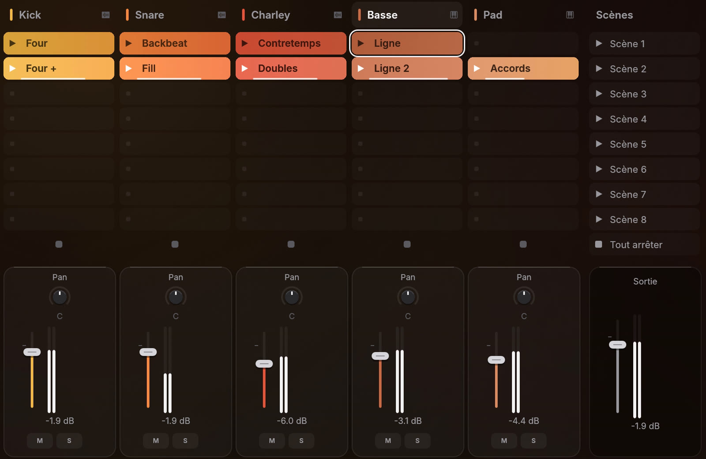
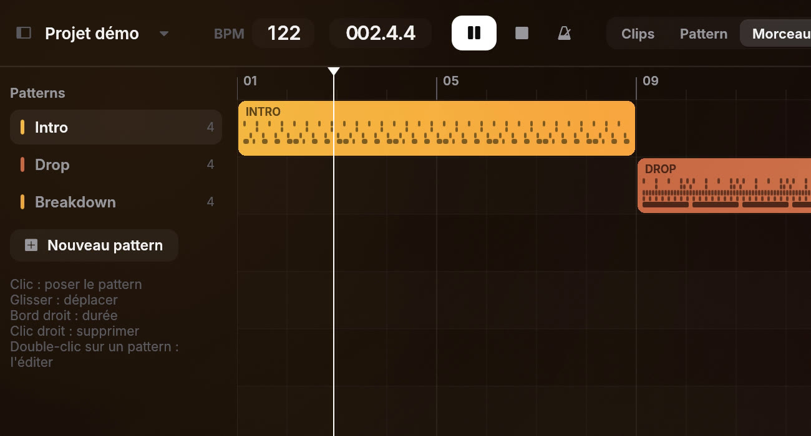
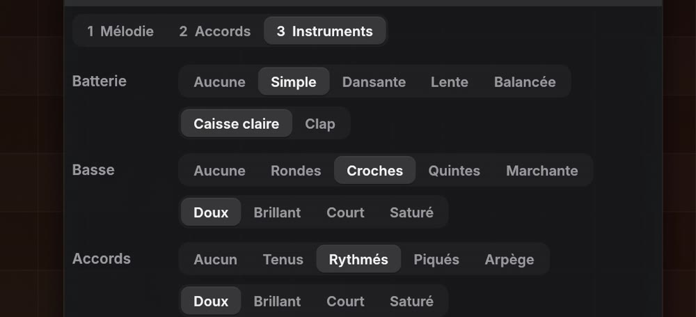
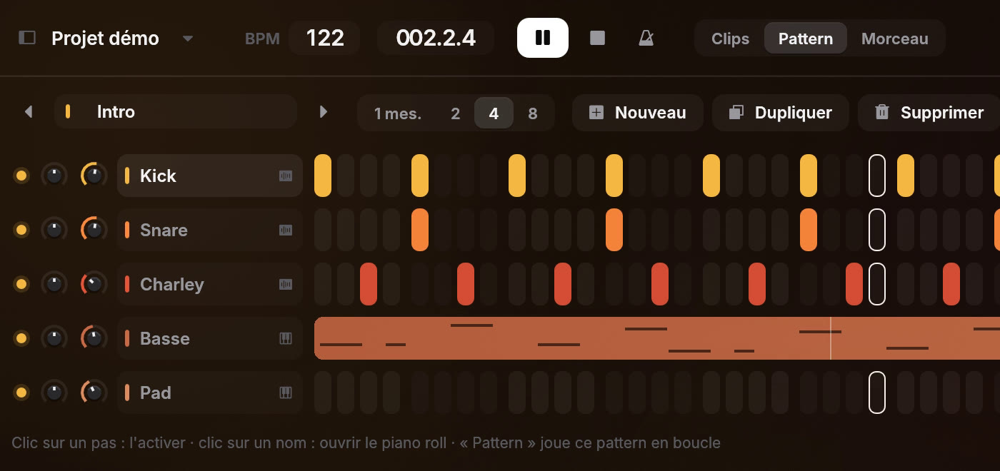
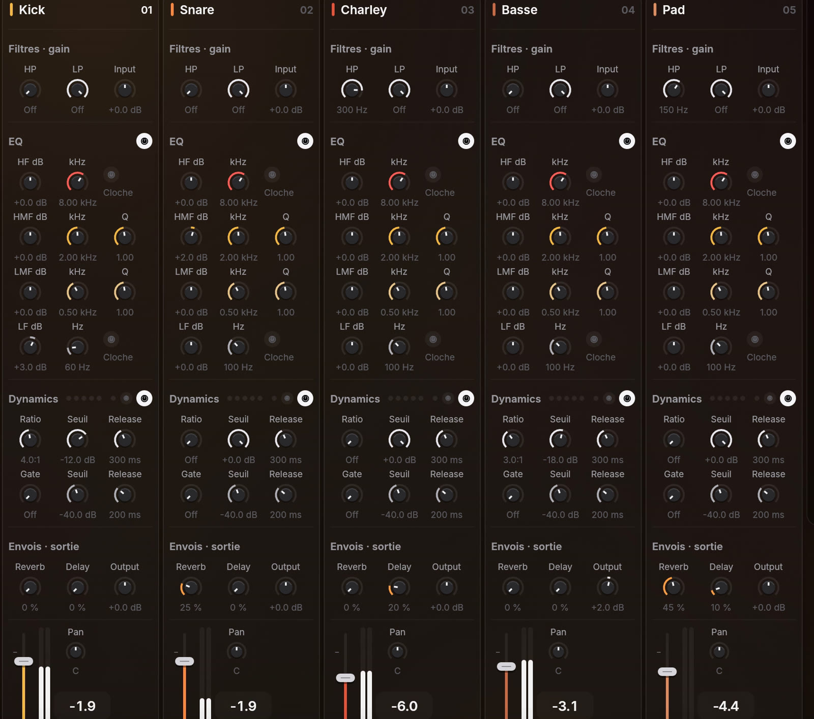
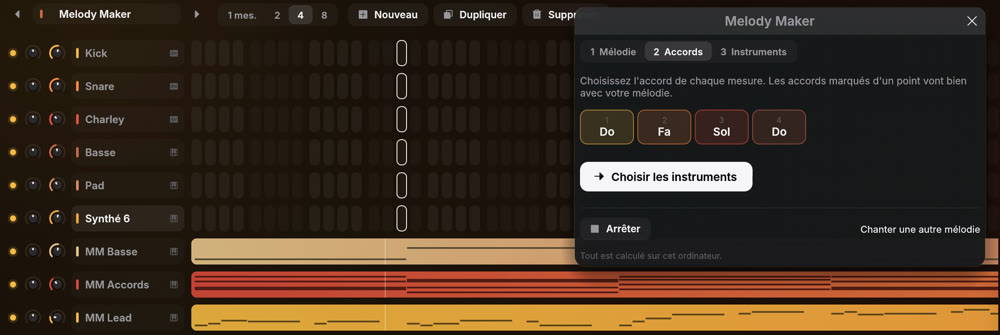
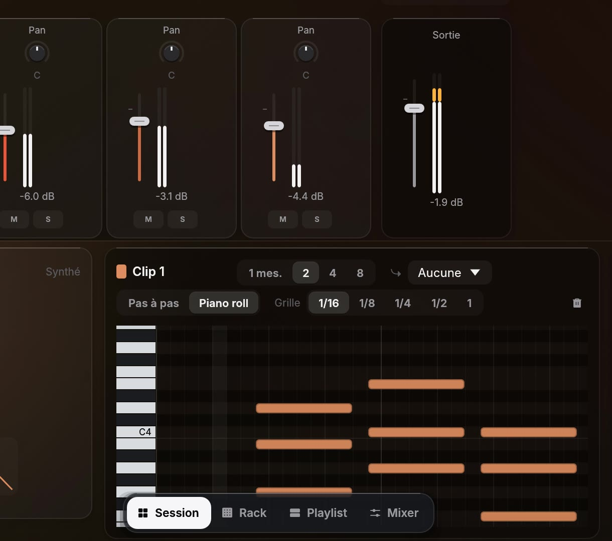
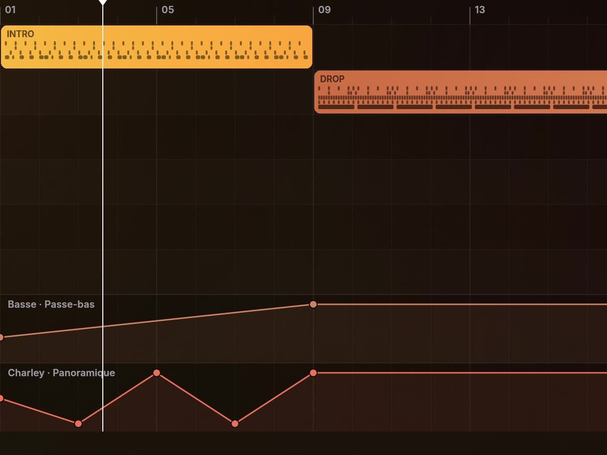

"Hear everything" button under the output, in Session and Mixer: clears every mute and solo in one click.
 Melody
Melody
From idea to track.
It all starts here.
Compose, arrange and produce in a studio built to let your creativity run free. Piano roll, playlist, mixing console, VST3 and CLAP plugins, sidechain and automation: everything you need to build, shape and finish your tracks.
Sync your samples to the tempo, explore new ideas with music generation and collaborate online. Everything finds its place, from the first note to the final mix.
Your music. Your workflow. Your sound.
- 3 platformsMac, Windows and Linux
- VST3 and CLAPYour favorite plugins
- MIDIKeyboard, controller or computer keys
- WAV, MP3, MIDIOr as separate stems
- JamTogether, in real time
Take the tour
The whole studio in one window
Find ideas by launching loops in Session, lay out the song in the Playlist, shape the sound in the Mixer. Each one is a click away.

Session
Every track has its own clips. Launch them, move from scene to scene and find what works, without ever stopping the music.
Learn more
Playlist
Lay out your patterns and audio takes along the timeline: intro, verse, chorus. The song comes together one section at a time.
Learn more
Melody Maker
Sing an idea and Melody writes down the notes. Then Harmonize suggests chords, a bassline and drums.
Learn more
Rack
Step sequencing for your beats. Click the steps and the pattern plays. Each track has its own instrument.
Learn more
Mixer
A full mixing console, with effects, sidechain and your VST3 and CLAP plugins on every track.
Learn more
Start to finish
From first idea to finished track
Compose, play, arrange, mix. Every stage of a song, without ever leaving Melody.

Compose
Piano roll, step sequencer and Harmonize to find the right chords. Plus songwriting help if you’re just starting out.
Explore the composition tools
Play
Play your MIDI keyboard or your computer keys and record straight into your clips.
Explore live performance
Arrange
Audio takes, fades, tempo and automation, all on one timeline.
Explore arrangingMix
A full console, sidechain, your plugins, and export to other DAWs.
Explore mixing
Who it’s for
Whether you’re just starting out or already producing
Melody guides you through the first few days, then gets out of your way.
Just starting out
- Sing or whistle an idea and it turns into notes you can edit.
- Inspiration writes drums, a bassline or chords in your key.
- Step sequencing for beats. Click the steps and it plays.
- Try it without installing anything, right in your browser.
Already producing
- VST3 and CLAP plugins, with automation for every parameter.
- Sidechain, limiter and a full console with effects on every track.
- Tempo sync: your audio follows the BPM without changing pitch.
- MIDI and stem export to Live, Logic or FL Studio.
Getting started
New to music? Hum it, Melody helps.
No music theory required. Sing your idea, and Melody writes it out as notes and suggests chords, a bassline and drums to get you going. Then you can change anything by hand, and learn as you go.
What's new
Melody moves fast
A new version ships almost every day, and Melody updates itself.
Note editor: move notes up or down an octave.
Clip editor: Double button.
Download
Download Melody
Free beta, no account needed. Melody keeps itself up to date after that. Step-by-step install
Mac
macOS 11 or later. One app for both Apple Silicon and Intel.
Download for MacWindows
Windows 10 or 11, 64-bit. Just unzip it, no installer needed.
Download for WindowsLinux
64-bit Linux, Ubuntu 22.04 or later.
Download for Linux
Free beta
Your next idea deserves more